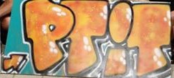
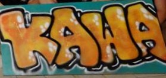

Le Campus de l'INSA
Voici un plan et une vidéo du campus un peu plus bas pour que tu puisses te répérer un minimum.
- En rouge : les bâtiments de cours et administratifs. Au bâtiment 8, tu y trouveras le restaurant universitaire (RU), la cafétéria, et la bibliohèque (Bib'INSA).
- En jaune : les résidences et le bâtiment A1 où se trouve l'Amicale des élèves -c'est le BDE de l'INSA- ainsi que le Proximo, une petite épicerie tenue par des élèves avec quelques produits à prix coutant.
- En vert : Le Petit Kawa (PK) et la salle de Boom. Le Trou, c'est généralement un endroit où les gens se retrouve pour les soirées mais ce sera aussi un point de rendez-vous important pendant la semaine d'intégration.
Le Bureau des Elèves : clubs et assos 
Toute la vie du campus est gérée par le BDE : l'Amicale des élèves. Ce bureau organise plusieurs évènements tout au long de l'année, et s'occupe également de gérer les différents clubs et associations. Tu peux découvrir tout cela sur leur site : Amicale des élèves.
Pour participer à un de ces évènements ou intégrer un club ou une association, il est indispensable de devenir Amicaliste. Alors fais-le le plus vite possible : Devenir Amicaliste.
Le Bar de l'INSA
  Le P'tit Kawa, le Pek's ou encore le PK :
c'est le foyer des élèves mais aussi un brave bar où tu peux y consommer des sirops (gratuitement), des cafés et des bières (de qualité) à 1,50€ le demi. Les horaires sont variables, un peu trop d'ailleurs (c'était mieux avant) sauf pour le mercredi soir où chaque semaine de 21h à 2h du matin sont organisées les soirées. Information importante liée à celle-ci, il n'y a pas cours le jeudi après-midi.
À coté du PK, la salle de Boom, c'est là que sont organisés les grosses soirées chaque veille de vacances : jusqu'à 1000 personnes présentes.
Horaires Restaurant Universitaire et Cafétéria
RU : du lundi au vendredi, de 11h30 à 13h15, 3€25 entrée-plat-dessert
Cafét : du lundi au vendredi de 8h à 11h et de 11h30 à 15h45, de 19h à 20h15 (fermée le vendredi)